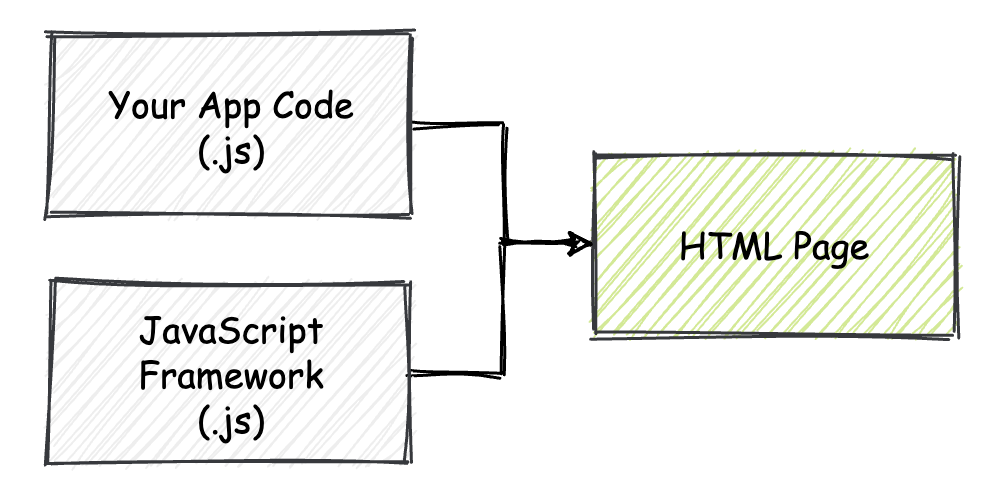
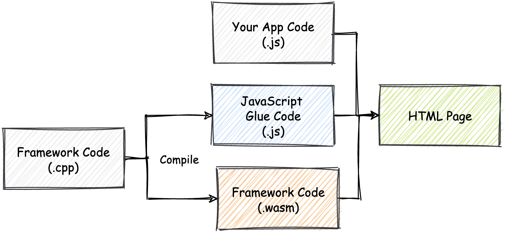
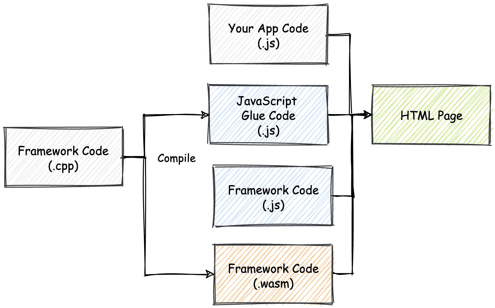
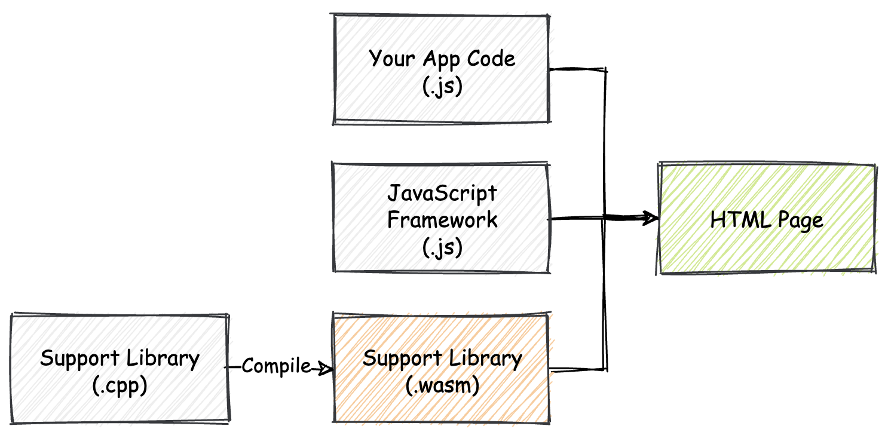
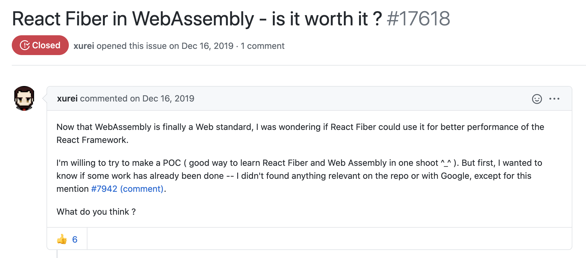
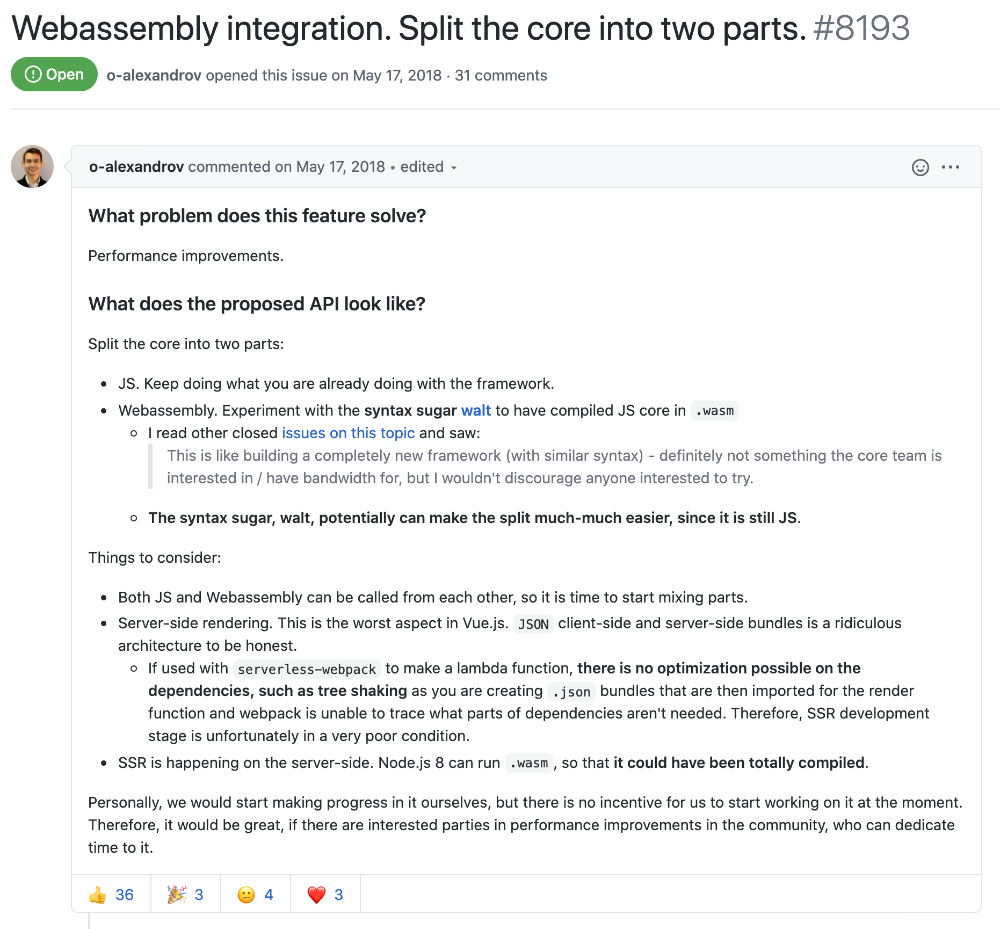
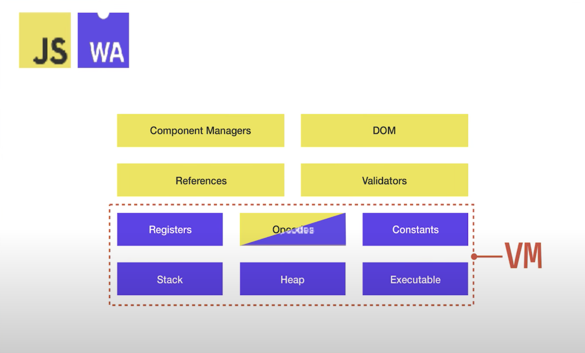

- 00 开篇词 我们为什么要了解 WebAssembly？.md.html
- 01 基础篇：学习此课程你需要了解哪些基础知识？.md.html
- 02 历史篇：为什么会有 WebAssembly 这样一门技术？.md.html
- 03 WebAssembly 是一门新的编程语言吗？.md.html
- 04 WebAssembly 模块的基本组成结构到底有多简单？.md.html
- 05 二进制编码：WebAssembly 微观世界的基本数据规则是什么？.md.html
- 06 WAT：如何让一个 WebAssembly 二进制模块的内容易于解读？.md.html
- 07 WASI：你听说过 WebAssembly 操作系统接口吗？.md.html
- 08 API：在 WebAssembly MVP 标准下你能做到哪些事？.md.html
- 09 WebAssembly 能够为 Web 前端框架赋能吗？.md.html
- 10 有哪些已经投入生产的 WebAssembly 真实案例？.md.html
- 11 WebAssembly 在物联网、多媒体与云技术方面有哪些创新实践？.md.html
- 12 有哪些优秀的 WebAssembly 编译器与运行时？.md.html
- 13 LLVM：如何将自定义的语言编译到 WebAssembly？.md.html
- 14 有哪些正在行进中的 WebAssembly Post-MVP 提案？.md.html
- 15 如何实现一个 WebAssembly 在线多媒体处理应用（一）？.md.html
- 16 如何实现一个 WebAssembly 在线多媒体处理应用（二）？.md.html
- 17 如何实现一个 WebAssembly 在线多媒体处理应用（三）？.md.html
- 18 如何进行 Wasm 应用的调试与分析？.md.html
- 19 如何应用 WASI 及其相关生态？.md.html
- 20 总结与答疑.md.html
- 结束语 WebAssembly，未来已来.md.html
- 捐赠
09 WebAssembly 能够为 Web 前端框架赋能吗？
你好，我是于航。
相信现在你已经知道，“WebAssembly” 是由 “Web” 与 “Assembly” 两个单词组成的。前面的 “Web” 代指 Web 平台；后面的 “Assembly” 在我们所熟悉的编程语言体系中，可以理解为“汇编”。
通常来说，汇编语言给人的第一感觉便是“底层，外加高性能”。而这，也正是第一次听说 Wasm 这门技术的开发者们的第一感受。
说到 Web 开发，那我们不得不提到层出不穷的 Web 前端开发框架。以 React、Vue.js 及 Angular 为代表的三大框架的出现，使得 Web 前端应用的开发模式，自 2013 年后便开始逐渐从“旧时代”的 jQuery、Prototype.js 走向了以 “MVVM” 框架为主的“新时代”。
既然我们说 Wasm 起源于 Web，并且它的出现会给未来的 Web 应用开发模式，带来一系列变化。那么，对于这些现阶段在我们日常工作中承担“主力”角色的 Web 前端框架来说，Wasm 会给它们带来怎样的变化呢？未来的 Web 前端开发框架会以怎样的方式与 Wasm 紧密融合呢？
相信这些问题，是每一个 Web 前端开发同学在接触 Wasm 这项技术之后，都会存在的疑问。今天，我们就来看一看，在如今的 Wasm MVP 标准下，对于这些基于 JavaScript 编写的现代 Web 前端框架我们能够做些什么。
几种方案的思考
在上一章的“核心原理篇”中，我们从不同的角度讲解了 Wasm 究竟是什么。那这里我们还是用最精简的方式来概括一下：“Wasm 是一种基于堆栈式虚拟机的二进制指令集，它被设计成为编程语言的可移植编译目标。借助 Web 平台提供的相关接口，我们可以在 Web 浏览器中高效地调用从 Wasm 模块中导出的函数”。
那我们就根据 Wasm 现阶段所具有的这些能力，来讨论一下 Wasm 对现代 Web 前端开发框架可以产生怎样的影响。我将会根据 Wasm 与框架之间的可能融合程度，来从不同的角度加以讨论。相应的，我们可以总结出如下四种方案：
- 使用 Wasm 完全重写现有框架
- 使用 Wasm 重写现有框架的核心逻辑
- 使用 Wasm 配合框架增强应用的部分功能
- 使用其他语言构建 Web 前端框架
接下来，我将依次和你讨论上面的这四种情况。
使用 Wasm 完全重写现有框架
在这个方案下，我们将使用 Wasm 完全重写现有的 Web 前端框架。而这就需要我们通过 JavaScript 之外的诸如 C/C++、Rust 等第三方静态类型语言，将框架的逻辑全部重写。先不谈能否实现，我们先来看看在这种方案下，前端框架的使用方式会发生怎样的改变。
在此之前，Web 前端框架的使用方式可以通过如下图来大致描述。

你可以看到，除去样式文件（CSS）以外，我们的 Web 应用程序仅由“框架代码”和“应用程序代码”两部分组成。这两部分代码全部由 JavaScript 语言进行编写。HTML 文件负责将这些 JavaScript 代码整合在一起，并确保在页面加载时执行它们。
当我们将 Web 前端框架使用 Wasm 完全重写后，事情又会变成另外一幅景象。此时的 Web 应用组成结构将如下图所示。

除了使用 JavaScript 编写的“应用程序代码”，以及经过编译生成的 Wasm 字节码格式的框架代码以外，我们的项目中还会多出来一部分用作 “Glue Code”（胶水代码）的 JavaScript 代码。那这部分 Glue Code 主要用来做什么呢？这就要从现阶段的 Wasm 标准与 Web 浏览器的可交互性开始说起了。
无法剥离的 JavaScript 代码
在现阶段 Wasm 的 MVP 标准中，我们需要通过各类 JavaScript API 与 Web API 来在 Web 平台上与 Wasm 代码（模块）进行交互。这些 API 均只能够通过 JavaScript 代码来进行调用。而所有这些需要与 Wasm 模块直接进行的交互（互操作），都是由包含有 API 调用的 Glue Code 代码完成的。
恰巧在目前 Wasm 的 MVP 标准中，我们也同样无法直接在 Wasm 字节码中操作 HTML 页面上的 DOM 元素。因此，对于这部分 Web 框架最核心的功能，便也是需要通过借助 Glue Code 调用 Web API 来帮助我们完成的。
为了达到这个目的，我们需要将 DOM 操作相关的逻辑封装成 JavaScript 函数，然后再通过 Wasm 模块的 Import Section 导入到模块中供其使用。
因此，框架代码与 Glue Code 之间的协作方式可能会类似如下代码形式。首先是框架对应的 C++ 代码。
// framework.cpp
extern void createEmptyDivElement();
int main(int argc, char** argv) {
createEmptyDivElement(); // 创建一个空的 "div" 标签；
createEmptyDivElement();
...
return 0;
}
然后下面是 Glue Code 对应的 JavaScript 代码。
// glue.js
...
WebAssembly.instantiateStreaming(wasmBytes, {
env: {
// 将函数导入到 Wasm 模块中；
createEmptyDivElement: () => document.createElement('div'),
...
}
})
可以看到，在 Glue Code 代码中，我们将封装好的用于调用 “document.createElement” 这个 Web API 去创建空 div 标签的 JavaScript 函数 “createEmptyDivElement”，传递给了用于实例化 Wasm 模块的 WebAssembly.instantiateStreaming 方法。
在框架所对应的 C++ 代码中，我们使用了这个从 JavaScript 环境导入到 Wasm 模块中的 “createEmptyDivElement” 函数。这里在代码中，所有通过 “extern” 指定的外部函数，都将会在编译至 Wasm 二进制模块后，从模块对应的 Import Section 中获取实际的函数体。
关于上述的代码示例，你大致有一个印象即可。我们会在“实战篇”中详细介绍一个 Wasm 项目从 0 到 1 的完整构建流程。
跨上下文频繁调用的开销
除了上面提到的，即使将 Web 前端框架完全重写并编译至 Wasm，我们也无法在完全脱离 JavaScript Glue Code 的情况下使用框架。另一个由此带来的问题在某些情况下可能会显得更加“致命”，那就是 “Wasm 与 JavaScript 两个上下文环境之间的函数调用开销”。
在早期的 Firefox 浏览器（版本 62 以前）上，由于实现问题，导致不管是使用 JavaScript 调用从 Wasm 模块中导出的函数，还是在 Wasm 模块内调用从 Web 浏览器导入到模块内的 JavaScript 函数，这两种方式的函数调用成本都十分高昂。在某些情况下，同样的函数调用过程会比 JavaScript 之间的函数调用过程慢约 20 倍。
但好在 Firefox 在 62 之后的版本中修复了这个问题。并着重优化了 JavaScript 与 Wasm 之间的函数调用效率。甚至在某些情况下，JavaScript 与 Wasm 之间的函数调用效率要高于 JavaScript 之间的函数效率。
虽然这个问题在 Firefox 上得到了修复，但不可否认的是，在其他浏览器厂商的 Wasm 实现中，也可能会出现类似的性能问题。
Web 前端框架作为一个需要与 DOM 元素，以及相关 Web API 强相互依赖的技术产品，可想而知其在实际使用过程中，必然会通过 Glue Code 去完成 Wasm 与 JavaScript 之间的频繁函数调用。而以性能为重的 Web 前端框架，则无法忽视这些由于频繁函数调用带来的性能损耗。
使用 Wasm 重写现有框架的核心逻辑
在第二种方案下，我们将使用 Wasm 重写 Web 前端框架的核心逻辑，但并非全部。
如下图所示，在这种情况下，Web 应用的主要组成结构与上一种方案类似，唯一的不同是增加了 Web 框架所对应的 JavaScript 代码实现部分。

相较于将整个框架都通过 Wasm 来实现，仅实现框架的核心逻辑部分，可以说更具有现实意义，而这也是现阶段大多数的框架开发者都在实践的方向。
所谓“核心逻辑”，其实依框架的具体实现不同，无法通过统一、准确的描述来定义。但可以遵循的原则是，这部分逻辑不会涉及与 DOM 或者 Web API 的频繁交互，但其本身却又是“计算密集（compute-intensive）”的。
这里的“计算密集”可以理解为：包含有大量的纯数学计算逻辑。我们知道，Wasm 十分擅长处理这样的计算密集型逻辑。一个很具有代表性的，可以被 Wasm 重写的组件便是 React Fiber 架构中的 Reconciler（主要用来计算 React 中 VDOM 之间的差异）。
使用 Wasm 配合框架增强应用的部分功能
我们继续逐渐递减 Wasm 与框架的“耦合”程度。
在第三种方案中，从本质上来看，框架本身的代码不会有任何的变化。而 Wasm 也不再着重于优化框架本身的性能。相对地，框架与 Wasm 将会配合起来使用，以优化整个应用的某一部分功能。下面这张图是在这个方案下，一个 Web 应用的基本组成结构。

可以看到，这里 Wasm 本身只是作为一个模块，用于优化应用的某方面功能。而 Web 框架本身的源代码组成形式不会发生任何改变，应用仍然还是使用 JavaScript 来构建其主体结构。
事实上，这是 Wasm 在 Web 上的一种最为典型和常见的应用方式。Wasm 并不尝试取代 JavaScript，而是通过利用其优势来补足或者加以提升 Web 应用在某方面的短板。一个最为常见的例子便是前端的“数据编解码”。
我们都知道，“编解码”实际上是十分单纯的数学计算，那么这便是 Wasm 能够大显身手的地方。通过替换 Web 应用中原有的基于 JavaScript 实现的编解码逻辑，使用 Wasm 来实现这部分逻辑则会有着明显的性能提升。而且由于这个过程不涉及与 Web API 的频繁交互，Wasm 所能够带来的性能提升程度更是显而易见的。
使用其他语言构建 Web 前端框架
最后一种方案相较于之前的几种可能会稍显激进，但随着 Wasm 发展而不断出现的，一批又一批基于此方案实现的 Web 前端框架，值得让我们重新重视起来。
在此方案下，我们将使用诸如 C++ 和 Rust 等静态类型语言来实现 Web 前端框架。不仅如此，我们也同样需要使用这些语言来编写我们的 Web 应用。类似的框架有基于 Rust 语言的 Yew、Seed，以及基于 Go 语言 Vugu 等等。
以相对较为“流行”的 Yew 框架为例，我们使用它来编写 Web 前端应用的大致思路，与 React 和 Vue.js 等传统 JavaScript Web 前端框架的形式十分类似。以下代码展示了如何使用 Rust 语言基于 Yew 框架，来构建一个基本的 Web 前端应用。
use yew::prelude::*;
pub struct App {}
pub enum Msg {}
impl Component for App {
type Message = Msg;
type Properties = ();
// 应用创建时执行的生命周期函数；
fn create(_: Self::Properties, _: ComponentLink<Self>) -> Self {
App {}
}
// 应用视图更新时执行的生命周期函数；
fn update(&mut self, _msg: Self::Message) -> ShouldRender {
true
}
// 定义应用视图结构；
fn view(&self) -> Html {
html! {
<p>{ "Hello, world!" }</p>
}
}
}
相信即使你不懂 Rust，但如果你熟悉 React，仍然可以发现基于 Yew 构建的 Web 前端应用，它的代码组织结构与 React 十分类似，整个应用也同样被划分为不同的“生命周期”。
比如在上面的代码中，“create” 方法对应应用的创建时刻；update 方法对应应用的状态更新时刻，以及最后用于渲染应用 UI 的 view 方法等等。不仅如此，在 Yew 中也同样拥有组件的概念，使用方式与 React 类似。
相对来说，抛开语言本身带来的成本不谈，单从性能来看，在目前 Wasm 的 MVP 标准下，Yew 这类框架的潜力还没有实际的显露出来。Yew 希望能够借助 Wasm 的能力，将视图（VDOM）差异的计算过程以更高性能的方式进行实现。但鉴于目前 MVP 标准下的一些限制，实际上在最后的编译产物中，Glue Code 执行时所带来的成本则会与 Wasm 带来的性能提升相互抵消。
不仅如此，考虑到目前 JavaScript 在构建 Web 应用时的丰富生态和资源，单从性能角度进行考量而使用 Yew 等框架也不是一个实际可行的方案。因此，未来这类“跨语言” Web 前端框架的生态会变得如何，也只能够让我们拭目以待了。
已有的讨论
在介绍了上述四种，Wasm 可能与 Web 前端框架相互结合的方案后。我们再回过头来，看一看目前仍然流行的几种 JavaScript Web 前端框架有没有进行与 Wasm 结合的相关尝试。这里我选择了 React、Vue.js 以及 Ember.js 这三种 Web 框架。
React
作为目前 Web 前端开发领域中最流行的框架之一。React 暂时还没有计划进行任何与 Wasm 相关的尝试。如下图所示，虽然社区中曾有人提议使用 Wasm 重写 React Fiber 架构中的 Reconciler 组件，但由于目前 Wasm 还无法直接操作 DOM 元素等标准上的限制，导致我们可预见，现阶段即使用 Wasm 重写 React 的 Fiber 算法，框架在实际处理 UI 更新时，可能也不会有着显著的性能提升。因此，对于 React 团队来说，投入产出比是一个值得考量的因素。

Vue.js
同 React 类似，Vue.js 的社区内也曾有过类似的讨论，如下图所示。

但与 React 所不同的是，Vue.js 与 Wasm 的“结合”方式根据框架的具体实现细节，可能有着更多的可能。不过一个不可否认的事实是，Wasm 仍然处在快速的发展阶段。同样的，基于 Wasm 构建的各类应用也同样处在不稳定的维护状态中（比如，上述帖子中提到的 Walt 实际上于 2019 年便不再继续更新）。而目前，正是一个“百花齐放”的时代。
Ember.js
最后我们要来讲讲 Ember.js。
Ember.js 的用户虽然没有 React 与 Vue.js 那么多，但它却是第一个宣布尝试与 Wasm 进行“深度整合”的 Web 前端框架，Ember.js 在内部使用了名为 Glimmer VM 的渲染引擎。与 React 通过使用 Reconciler 组件计算 VDOM 差异来更新 UI 的策略有所不同，Glimmer VM 通过将模板的构建过程分解为独立的虚拟机 “OpCode” 操作，来对 UI 中呈现的动态值进行细粒度更新。

在 EmberConf 2018 年的技术会议上，来自 Ember.js 团队的 Yehuda Katz 向我们介绍了 Glimmer VM 与 Wasm 的整合情况。你通过上图可以看到，除了 OpCode 模块相关的部分逻辑仍然在使用 JavaScript 构建以外，整个 VM 的大部分功能都已经完成到 Wasm 的迁移。并且该 Wasm 版本的 Glimmer VM 也已经通过了所有的测试集 Case。
但计划赶不上变化，回到 2020 年，我们再来看 Glimmer VM，关于它与 Wasm 整合的消息貌似已经没有了太多的声音。
从 Ember.js 官方论坛中我们可以看到，Ember.js 在与 Wasm 进行整合的过程中，其实遇到了很多问题，比如不支持 GC 导致 Wasm 线性内存中使用的资源无法被及时清理。Glimmer VM 还在继续为将来能够完全移植到 Wasm 做着准备。
但无论如何，这都不失为一次非常有意义的尝试。
总结
好了，讲到这，今天的内容也就基本结束了。最后我来给你总结一下。
在这节课里呢，我主要给你介绍了 Wasm 与 Web 前端框架的一些“故事”。
“Wasm 能否影响，或者说会如何影响现有的、基于 JavaScript 构建的现代 Web 前端框架呢？”这是一个被很多 Web 前端工程师所提及的问题。在这节课中，我尝试按照 Wasm 与 Web 前端框架的“整合程度”不同，将两者能够相互结合的可能方式大致分为了四种方案。
在第一种方案中，我们尝试将整个 Web 框架的全部功能，使用同样的 Wasm 版本进行代替，而应用代码仍然使用 JavaScript 进行编写。但由于现阶段 Wasm MVP 标准的限制，在这种方案下，我们不得不借助 JavaScript Glue Code 的帮助来实现框架的部分功能。
而当 Glue Code 的代码越来越多时，JavaScript 函数与 Wasm 导出函数之间的相互调用会更加频繁，在某些情况下，这可能会产生严重的性能损耗。因此结合现实情况来看，整个方案的可用性并不高。
在第二种方案中，我们尝试仅使用 Wasm 来重写框架的核心部分，比如 React Fiber 架构中的 Reconciler 组件。这类组件通常并不含有过多需要与 Web API 打交道的地方，相对纯粹的计算逻辑更易于 Wasm 能力的发挥。同时这种方案也是现阶段大多数 Web 框架正在尝试的，与 Wasm 进行交互的“常规”方式。
在第三种方案中，我们仅使用 Wasm 来作为 Web 框架的辅助，以优化 Web 应用的某一方面功能。在这种方案中，框架本身的代码结构不会有任何的变化。实际上，这种方案也是传统 Web 应用在利用 Wasm 时的最常规方式。
在最后一个方案中，我们介绍了一种更为激进的方式。在这种方案下，包括 Web 框架和应用代码本身，都会由除 JavaScript 以外的，如 Rust、C++ 和 Go 等静态语言来编写。
但同样受限于现阶段 Wasm MVP 标准的限制，框架本身仍然离不开 JavaScript Glue Code 的帮助。同时考虑到实际的语言使用成本以及 JavaScript 生态的舍弃，这种方案的实际可行性仍有待时间的验证。
无论如何，相信随着 Wasm Post-MVP 标准的不断实现，上述各方案中使用的 Glue Code 代码量将会逐渐减少。随之提升的，便是 Web 框架以及应用的整体运行性能。
课后思考
最后，我们来做一个思考题吧。
除了我们今天介绍的这四种 Web 框架与 Wasm 的结合使用方式，你还有哪些奇思妙想呢？
今天的课程就结束了，希望可以帮助到你，也希望你在下方的留言区和我参与讨论，同时欢迎你把这节课分享给你的朋友或者同事，一起交流一下。
© 2019 - 2023 Liangliang Lee. Powered by gin and hexo-theme-book.